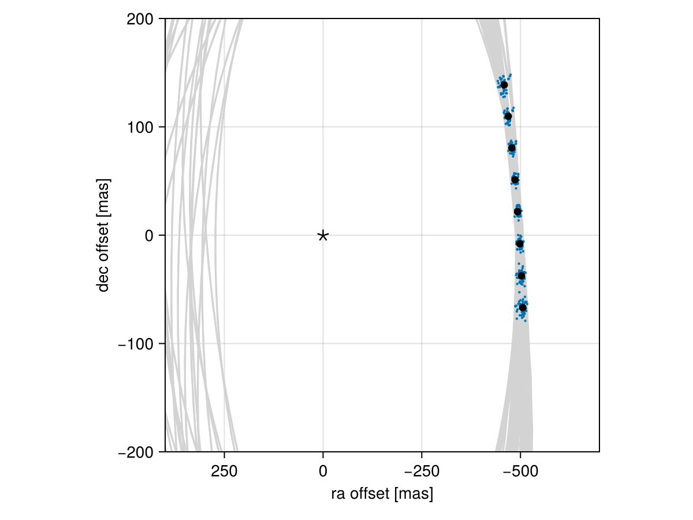

Posterior Predictive Checks
A posterior predictive check compares our true data with simulated data drawn from the posterior. This allows us to evaluate if the model is able to reproduce our observations appropriately. Samples drawn from the posterior predictive distribution should match the locations of the original data.
To demonstrate, we will fit a model to relative astrometry data:
using Octofitter
using Distributions
astrom_like = PlanetRelAstromLikelihood(Table(;
epoch= [50000,50120,50240,50360,50480,50600,50720,50840,],
ra = [-505.764,-502.57,-498.209,-492.678,-485.977,-478.11,-469.08,-458.896,],
dec = [-66.9298,-37.4722,-7.92755,21.6356, 51.1472, 80.5359, 109.729, 138.651,],
σ_ra = fill(10.0, 8),
σ_dec = fill(10.0, 8),
cor = fill(0.0, 8)
))
@planet b Visual{KepOrbit} begin
a ~ truncated(Normal(10, 4), lower=0.1, upper=100)
e ~ Uniform(0.0, 0.5)
i ~ Sine()
ω ~ UniformCircular()
Ω ~ UniformCircular()
θ ~ UniformCircular()
tp = θ_at_epoch_to_tperi(system,b,50420) # reference epoch for θ. Choose an MJD date near your data.
end astrom_like
@system Tutoria begin
M ~ truncated(Normal(1.2, 0.1), lower=0.1)
plx ~ truncated(Normal(50.0, 0.02), lower=0.1)
end b
model = Octofitter.LogDensityModel(Tutoria)
using Random
Random.seed!(0)
chain = octofit(model)Chains MCMC chain (1000×28×1 Array{Float64, 3}):
Iterations = 1:1:1000
Number of chains = 1
Samples per chain = 1000
Wall duration = 3.57 seconds
Compute duration = 3.57 seconds
parameters = M, plx, b_a, b_e, b_i, b_ωy, b_ωx, b_Ωy, b_Ωx, b_θy, b_θx, b_ω, b_Ω, b_θ, b_tp
internals = n_steps, is_accept, acceptance_rate, hamiltonian_energy, hamiltonian_energy_error, max_hamiltonian_energy_error, tree_depth, numerical_error, step_size, nom_step_size, is_adapt, loglike, logpost, tree_depth, numerical_error
Summary Statistics
parameters mean std mcse ess_bulk ess_tail r ⋯
Symbol Float64 Float64 Float64 Float64 Float64 Floa ⋯
M 1.1828 0.0896 0.0061 208.6837 323.6384 1.0 ⋯
plx 50.0003 0.0200 0.0011 312.1717 399.1501 1.0 ⋯
b_a 12.2606 2.5214 0.4618 39.3117 32.4890 1.0 ⋯
b_e 0.2037 0.1377 0.0243 36.4253 88.2331 1.0 ⋯
b_i 0.6483 0.1357 0.0134 99.8399 269.7934 1.0 ⋯
b_ωy -0.1637 0.7365 0.1523 26.8737 336.4040 1.0 ⋯
b_ωx -0.0376 0.6687 0.0804 96.4125 443.1157 1.0 ⋯
b_Ωy -0.2028 0.7262 0.1300 36.8896 157.6594 1.0 ⋯
b_Ωx 0.0081 0.6619 0.1522 21.2818 136.9573 1.0 ⋯
b_θy 0.0739 0.0107 0.0010 113.3526 270.4690 0.9 ⋯
b_θx -0.9911 0.1086 0.0118 87.3234 162.4608 1.0 ⋯
b_ω -0.5569 1.9355 0.2547 65.5202 201.3293 1.0 ⋯
b_Ω -0.1570 2.0483 0.4115 34.3341 121.2582 1.0 ⋯
b_θ -1.4963 0.0069 0.0004 264.3629 422.3745 1.0 ⋯
b_tp 41012.3566 6046.0370 1323.3566 23.5781 23.1793 1.0 ⋯
2 columns omitted
Quantiles
parameters 2.5% 25.0% 50.0% 75.0% 97.5%
Symbol Float64 Float64 Float64 Float64 Float64
M 0.9979 1.1236 1.1831 1.2444 1.3577
plx 49.9605 49.9863 50.0006 50.0152 50.0356
b_a 8.4137 10.3207 11.7931 13.8060 17.5607
b_e 0.0103 0.0798 0.1918 0.2996 0.4546
b_i 0.3213 0.5653 0.6672 0.7421 0.8551
b_ωy -1.0753 -0.8259 -0.4147 0.5699 1.0750
b_ωx -1.0431 -0.6112 -0.1504 0.6323 1.0598
b_Ωy -1.1074 -0.8583 -0.3959 0.4932 1.0434
b_Ωx -1.0197 -0.5871 0.0585 0.5870 1.0535
b_θy 0.0555 0.0653 0.0732 0.0812 0.0950
b_θx -1.2337 -1.0640 -0.9819 -0.9156 -0.8142
b_ω -3.0288 -2.4691 -0.5507 1.0384 3.0269
b_Ω -2.9948 -2.2441 0.1035 1.6775 3.0265
b_θ -1.5091 -1.5016 -1.4962 -1.4919 -1.4817
b_tp 28548.8940 36712.2765 41764.9613 45885.4013 49980.4608
We now have our posterior as approximated by the MCMC chain. Convert these posterior samples into orbit objects:
# Instead of creating orbit objects for all rows in the chain, just pick
# every twentieth row.
ii = 1:20:1000
orbits = Octofitter.construct_elements(chain, :b, ii)50-element Vector{Visual{KepOrbit{Float64}, Float64}}:
Visual{KepOrbit{Float64}, Float64}(KepOrbit(10.1, 0.0366, 0.63, -2.13, 4.31, 46200.0, 1.38), 49.997861477039216, 4.1254764485221864e6)
Visual{KepOrbit{Float64}, Float64}(KepOrbit(15.3, 0.138, 0.727, 1.19, 3.42, 49800.0, 1.09), 49.9949329420653, 4.125718105053211e6)
Visual{KepOrbit{Float64}, Float64}(KepOrbit(8.07, 0.3, 0.32, -2.29, 3.58, 46000.0, 1.28), 50.0027871287627, 4.1250700579718654e6)
Visual{KepOrbit{Float64}, Float64}(KepOrbit(14.3, 0.0207, 0.817, 1.85, 3.52, 34400.0, 1.29), 49.99412702313152, 4.1257846127519007e6)
Visual{KepOrbit{Float64}, Float64}(KepOrbit(10.4, 0.204, 0.561, -2.27, 3.11, 42700.0, 1.15), 49.9850555334262, 4.126533376802306e6)
Visual{KepOrbit{Float64}, Float64}(KepOrbit(9.19, 0.176, 0.597, 0.724, 0.907, 45700.0, 1.3), 50.01463643048333, 4.1240927600602116e6)
Visual{KepOrbit{Float64}, Float64}(KepOrbit(10.8, 0.0906, 0.612, 1.04, 0.367, 43400.0, 1.07), 49.96993623763164, 4.1277819331029044e6)
Visual{KepOrbit{Float64}, Float64}(KepOrbit(10.1, 0.0362, 0.492, 1.88, 4.42, 42100.0, 1.18), 50.02448582831102, 4.1232807611041097e6)
Visual{KepOrbit{Float64}, Float64}(KepOrbit(14.6, 0.133, 0.767, 0.714, 3.72, 49300.0, 1.15), 49.99975215290333, 4.1253204489739216e6)
Visual{KepOrbit{Float64}, Float64}(KepOrbit(8.68, 0.19, 0.44, -2.48, 4.02, 45700.0, 1.11), 49.98946393912422, 4.126169471454701e6)
⋮
Visual{KepOrbit{Float64}, Float64}(KepOrbit(12.9, 0.292, 0.694, -2.41, 1.8, 36200.0, 1.19), 49.95940396760605, 4.1286521379186856e6)
Visual{KepOrbit{Float64}, Float64}(KepOrbit(14.5, 0.463, 0.728, -2.51, 2.58, 34500.0, 1.25), 50.01876521745574, 4.1237523378129466e6)
Visual{KepOrbit{Float64}, Float64}(KepOrbit(13.8, 0.166, 0.709, 3.04, 2.94, 36100.0, 1.22), 49.976470206449335, 4.1272422631677184e6)
Visual{KepOrbit{Float64}, Float64}(KepOrbit(10.4, 0.258, 0.742, 1.52, 0.401, 45400.0, 1.21), 49.99335627797328, 4.1258482197739324e6)
Visual{KepOrbit{Float64}, Float64}(KepOrbit(9.46, 0.261, 0.541, 1.12, 0.00862, 44300.0, 1.2), 49.99839333890625, 4.1254325634398917e6)
Visual{KepOrbit{Float64}, Float64}(KepOrbit(15.1, 0.0527, 0.862, -2.11, 0.398, 49600.0, 1.3), 50.02796579602532, 4.1229939438470546e6)
Visual{KepOrbit{Float64}, Float64}(KepOrbit(12.0, 0.164, 0.655, -2.99, 3.43, 39200.0, 1.02), 50.001611385320786, 4.1251670553272255e6)
Visual{KepOrbit{Float64}, Float64}(KepOrbit(14.1, 0.3, 0.64, 3.03, 3.08, 34000.0, 1.07), 49.992262172011436, 4.1259385160505716e6)
Visual{KepOrbit{Float64}, Float64}(KepOrbit(11.5, 0.112, 0.584, -0.225, 3.94, 48400.0, 1.12), 50.04433823985017, 4.1216450702459635e6)Calculate and plot the location the planet would be at each observation epoch:
using CairoMakie
epochs = astrom_like.table.epoch' # transpose
x = raoff.(orbits, epochs)[:]
y = decoff.(orbits, epochs)[:]
fig = Figure()
ax = Axis(
fig[1,1], xlabel="ra offset [mas]", ylabel="dec offset [mas]",
xreversed=true,
aspect=1
)
for orbit in orbits
Makie.lines!(ax, orbit, color=:lightgrey)
end
Makie.scatter!(
ax,
x, y,
markersize=3,
)
fig
Makie.scatter!(ax, astrom_like.table.ra, astrom_like.table.dec,color=:black, label="observed")
Makie.scatter!(ax, [0],[0], marker='⋆', color=:black, markersize=20,label="")
Makie.xlims!(400,-700)
Makie.ylims!(-200,200)
fig
Looks like a great match to the data! Notice how the uncertainty around the middle point is lower than the ends. That's because the orbit's posterior location at that epoch is also constrained by the surrounding data points. We can know the location of the planet in hindsight better than we could measure it!
You can follow this same procedure for any kind of data modelled with Octofitter.